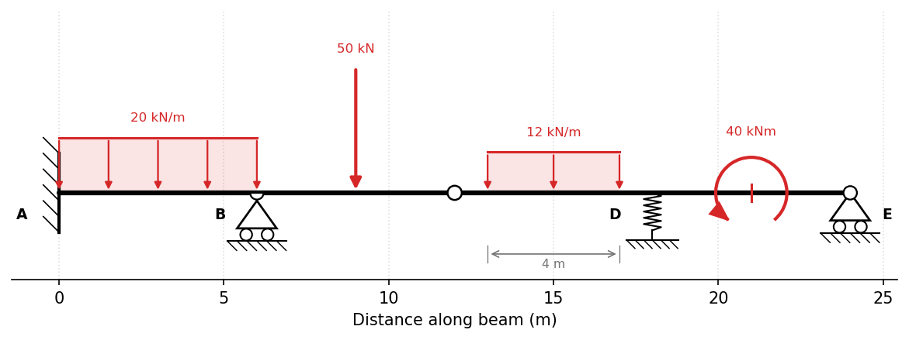
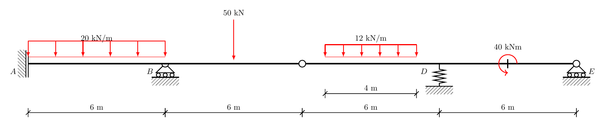

Defining Beams#
The beam configuration input data is to be in the following format:
Member Lengths (L)#
A vector of the lengths of each member.
Dimension: N x 1, where N is the number of members.
Units: m
Flexural Rigidity (EI)#
The flexural rigidity for each member.
A member may be prismatic (constant EI, given as a scalar) or
non-prismatic (variable EI). A non-prismatic member is defined with a
pycba.SectionEI object built from one or more contiguous segments that
together describe EI(x) over the span. x is the span-local physical
coordinate (0 at the span start, the real span length at the end). Segments
are added head-to-tail with add_segment(seg_type, x, ei, degree=None)
(chainable), or in one line by passing a list of specs to the constructor:
import pycba as cba
# Straight haunch -> flat soffit -> straight haunch over a 12 m span:
sec = (cba.SectionEI()
.add_segment("linear", [0.0, 3.0], [3.0e5, 1.2e5])
.add_segment("const", [3.0, 9.0], 1.2e5)
.add_segment("linear", [9.0, 12.0], [1.2e5, 3.0e5]))
The seg_type is one of:
"const"— constantEIover[x0, x1];x = [x0, x1],eiscalar."linear"— one linear piece;x = [x0, x1],ei = [ei0, ei1]."pwl"— piecewise-linear;x = [x0, …, xn](n ≥ 2 stations),eiof the same length, givingn − 1linear pieces with kinks at the interior stations."poly"— one polynomial piece;eiis either sample values (a polynomial of orderdegree, defaultlen(x) − 1, is fitted) or acallableei(x_local)evaluated in the span-local coordinate (e.g. a parabolic soffit,EI ∝ depth³).
Segments must be contiguous (each new segment’s x[0] equals the running
end; the first starts at 0) — gaps/overlaps raise an error — and the total
coverage must equal the span length. A coincident x carrying a different ei
across a join is an allowed step (discontinuous EI).
Non-prismatic members are analysed exactly by flexibility (force-method)
integration of the element stiffness, evaluated piece-by-piece between
consecutive breakpoints (segment joins and pwl kinks) so that kinks and
steps are captured exactly; a single const segment reproduces the closed-form
prismatic element to machine precision. Scalar and SectionEI members may be
freely mixed in the same beam.
Dimension: N x 1 (one scalar or SectionEI per span; a single value is
applied to all spans)
Units: kNm2
Restraints (R)#
A vector of restraints for each node, as defined by the ends of each member.
Each node has 2 degrees of freedom, vertical deflection and rotation, in that order, for each node.
Restraint for a degree of freedom is indicated by a “-1” value.
Unrestrained degrees of freedom are indicated by a “0” value.
Supports with a stiffness (kN/m or kNm/rad) are indicated by a positive value of the stiffness, k: i.e. “+k”
Dimension: 2N x 1
Units: kN/m or kNm/rad or None
Load Matrix (LM)#
A List of Lists representing the applied loads.
Each entry is a single load descriptor whose length depends on the load type:
Type |
Name |
Format |
Columns |
|---|---|---|---|
1 |
UDL |
|
3 |
2 |
Point Load |
|
4 |
3 |
Partial UDL |
|
5 |
4 |
Moment Load |
|
4 |
5 |
Trapezoidal (full) |
|
4 |
5 |
Trapezoidal (partial) |
|
6 |
6 |
Imposed curvature |
|
3+ |
Load Types:
Uniformly Distributed Loads, which only have a load value.
Point Loads, located at
afrom the left end of the span.Partial UDLs, starting at
afor a distance ofc(i.e. the cover) where \(L \geq a + c\).Moment Load, located at
a.Trapezoidal Load, linearly varying from
w1tow2.Full span:
[span, 5, w1, w2]—w1at the left end,w2at the right end.Partial:
[span, 5, w1, w2, a, c]—w1at positiona,w2at positiona + c, where \(L \geq a + c\).
Imposed Curvature (initial-strain) load, applying a free curvature field \(\kappa(x) = k_0 + k_1 x + \dots\) along the member. On a statically-determinate span it induces no internal forces, only a free deflected shape; on a restrained or continuous structure its restraint generates real moments and reactions. This is the mechanism for applying creep, shrinkage and thermal curvatures (e.g. for prestressed-concrete time-dependent analysis).
Dimension: M rows (one per applied load), with 3 or more columns per row depending on load type.
Units: kN, kN/m, and metres.
Load Cases and Response Combinations#
For independent analyses and arbitrary additive combinations, add named cases
to a LoadCases collection. A LoadCase is one arrangement of loads that can
be analysed directly. A LoadCombination is a weighted superposition of those
cases. Envelopes are then formed from the extrema of analysed cases or
combinations.
This is the natural place to translate design-code action categories and
combination equations into analysis input: for example, a code may define
permanent (G) and variable (Q) actions with partial factors, combination
factors, and arrangement rules. PyCBA does not implement a design code directly;
it provides the load-case, factor and patterning machinery for applying the code
you choose.
A load case can be built from a raw load matrix, or by using higher-level load helpers:
load_cases = cba.LoadCases(beam)
load_cases.add_case("G").add_udl(1, 5.0).add_udl(2, 5.0)
load_cases.add_udl("Q1", 1, 10.0)
load_cases.add_pl("Q2", 2, 20.0, 3.0)
# A UDL over global beam coordinates is split at span boundaries.
load_cases.add_segment_udl("Q3", x0=3.0, x1=12.0, w=8.0)
x, y = load_cases.combine({"G": 1.2, "Q1": 1.5}, response="M")
Use a LoadCombination when a named factor set is useful:
combo = cba.LoadCombination("1.2G + 1.5Q1", {"G": 1.2, "Q1": 1.5})
x, y = combo.response(load_cases, response="M")
LM = combo.to_LM(load_cases)
To inspect or plot one factored combination as a normal beam analysis, use
analyze_combination and then the standard BeamAnalysis methods:
analysis = load_cases.analyze_combination({"G": 1.2, "Q1": 1.5})
analysis.plot_results()
For a UDL that may be placed on selected parts of the beam, make_patterned_udl
creates one basis load case per span segment. A target combination then selects
the segments that increase one selected load effect:
udl_basis = cba.make_patterned_udl(beam, w=10.0, n_segments=20)
hogging = udl_basis.target_combination(
"Hogging at first internal support",
x=beam.beam.mbr_lengths[0],
sense="min",
response="M",
)
x, M = hogging.response(udl_basis)
LM = hogging.to_LM(udl_basis)
Changing n_segments changes the discretisation used by both the generated
basis cases and any combinations selected from them.
This segmented selection is related to Kadane’s maximum-subarray algorithm. If
segments may be selected independently, the target combination is formed by
including every segment with an adverse contribution at the target coordinate.
If a future loading rule requires a single contiguous loaded length, the same
segment response vector can instead be searched with a Kadane-style contiguous
subarray step before forming the LoadCombination.
LoadCases is a lower-level response-matrix and linear-combination utility.
LoadPattern is the high-level design-patterning workflow for dead and live
load max/min factors. The combined load-cases and load-patterning tutorial
shows how code-style combinations and patterning rules fit together. Internally,
a LoadPattern can be treated as a generator of factored LoadCases.
Each LoadCase stores ordinary PyCBA load-matrix rows, so it can also be
passed to LoadPattern.set_dead_loads or LoadPattern.set_live_loads where a
raw load matrix would otherwise be used:
lp = cba.LoadPattern(beam)
lp.set_dead_loads(load_cases.case("G"), 1.35, 0.9)
lp.set_live_loads(load_cases.case("Q1"), 1.5, 0.0)
pattern_cases = lp.to_load_cases()
pattern_LM = lp.to_LM()
env = lp.analyze()
pattern_cases.names lists the generated pattern names. pattern_LM is a
dictionary from generated pattern name to the exact factored LM used for that
analysis, which is useful when debugging a patterning rule. For a single
generated case, use pattern_cases[i].name and pattern_cases[i].to_LM().
Prescribed Displacements (D)#
An optional vector of prescribed nodal displacements (settlements), one entry per degree of freedom.
Use None for DOFs where the displacement is unknown (the default), and a float for DOFs whose displacement is known (e.g. a support settlement).
Fixed supports (
R = -1) default to zero displacement unless overridden byD.Spring supports (
R > 0) can also have a prescribed displacement; in that case the spring force isk_s × δand is reported inbeam_results.Rs.Constraint: a DOF cannot simultaneously have a spring (
R > 0), a prescribed displacement (D[i] ≠ None), and a non-zero consistent nodal load — this combination is physically inconsistent andanalyze()will raise aValueError.
Dimension: 2N+2 x 1 (same length as R)
Units: m (vertical DOFs), rad (rotational DOFs)
Element Types (eleType)#
Each member can be one of several element types, depending on the presence of hinges in the beam.
Note that at a hinge, only one of the members meeting at that node should have a pinned end.
The element types are given by an index:
fixed-fixed
fixed-pinned
pinned-fixed
pinned-pinned
Dimension: N x 1
Units: N/A
Visualising the Beam and Loads#
Once a beam is configured it can be drawn as a structural schematic — the beam,
its supports, internal hinges and the applied loads — using either a native
matplotlib backend or a TikZ/stanli
backend for publication-quality LaTeX figures. These draw the model (unlike
BeamAnalysis.plot_results, which draws the bending-moment, shear and deflection
results), so the beam does not need to have been analysed.
The supports are inferred from the restraint vector R: the first
vertical-only support is drawn as a pin and the remainder as rollers, a
fully-fixed node as an encastre wall, and a positive (spring) stiffness as a
spring. Internal moment releases are read from eleType and drawn as hinges.
Native matplotlib#
Beam.plot() draws the schematic on labelled axes (distance along the beam) and
returns the matplotlib Axes for further customisation. The beam below
exercises every support type — an encastré (E), rollers (R), an internal
hinge (H) and a spring set directly on the restraint vector — together with a
UDL, a point load, a partial UDL and a moment:
import pycba as cba
(L, EI, R, eType) = cba.parse_beam_string("E6R6H6R6R")
R[6] = 2000.0 # node 3: vertical spring support (stiffness in kN/m)
beam = cba.Beam(
L,
EI,
R,
eletype=eType,
LM=[
[1, 1, 20], # UDL on span 1
[2, 2, 50, 3.0], # point load on span 2
[3, 3, 12, 1.0, 4.0], # partial UDL on span 3
[4, 4, 40, 3.0], # moment on span 4
],
)
ax = beam.plot() # supports, loads, magnitudes and node labels

By default the matplotlib schematic relies on its x-axis for distance, so
span-length dimensions are off; pass dimensions=True to add them. Each
annotation is toggleable, and an existing Axes may be supplied:
beam.plot(ax=my_ax, dimensions=True) # add span dimensions
beam.plot(labels=False, load_values=False) # bare structure + loads
TikZ / stanli#
Beam.to_tikz() returns a standalone LaTeX document built on the stanli
package, and Beam.save_tikz() writes it to a file. With compile=True it is
rendered straight to PDF with pdflatex (which must be available, with the
stanli package installed):
tex = beam.to_tikz() # LaTeX source as a string
beam.save_tikz("beam.tex") # write the .tex
beam.save_tikz("beam.tex", compile=True) # also produce beam.pdf

Pass standalone=False to emit just the tikzpicture environment for
embedding in a larger document.
Choosing what loads to draw#
By default the beam’s own load matrix is drawn. The loads argument (accepted
by plot, to_tikz and save_tikz) selects a different source, so the same
beam structure can be drawn with any loading — or none:
beam.plot() # the beam's own load matrix (default)
beam.plot(loads=[]) # the bare structure only
beam.plot(loads=[[1, 1, 10]]) # an explicit load matrix
# A high-level load case or factored combination
load_cases = cba.LoadCases(beam)
load_cases.add_case("G").add_udl(1, 5.0).add_udl(2, 5.0)
load_cases.add_pl("Q", 2, 20.0, 3.0)
beam.plot(load_cases.case("G"))
combo = cba.LoadCombination("ULS", {"G": 1.35, "Q": 1.5})
beam.plot(combo, load_cases=load_cases) # draws the factored loads
The underlying pycba.render.BeamPlotter class is also available directly if
you want to build the renderer once and call both backends.
Units#
PyCBA is unit-agnostic: the solver performs no unit conversions, so any
internally consistent set of units may be used (e.g. kN, m, kNm — or N, mm,
N·mm) as long as every input shares the same system. Units surface only when a
result is plotted — in the axis labels and the deflection display scale —
and these are governed by a display unit system.
The default is SI with kN and m, matching PyCBA’s historical labels, so
nothing changes unless you ask for it. Choose a different system globally with
set_units:
cba.set_units("US-ft") # kip, ft, kip·ft; deflection shown in inches
or override it for a single figure with the units= argument accepted by every
plotting method (plot_results, Beam.plot, BridgeAnalysis.plot_static,
animate, …):
beam_analysis.plot_results(units="N-mm")
beam.plot(units="US-in")
bridge_analysis.plot_static(30.0, units="US-ft")
The built-in presets are:
Name |
Force |
Length |
Moment |
Deflection |
|---|---|---|---|---|
|
kN |
m |
kNm |
mm |
|
N |
mm |
N·mm |
mm |
|
kip |
ft |
kip·ft |
in |
|
kip |
in |
kip·in |
in |
|
— |
— |
— |
— |
"none" drops the unit labels entirely for a dimensionless presentation. For
anything else, build a pycba.units.UnitSystem directly and pass it wherever a
preset name is accepted:
from pycba.units import UnitSystem
mn_m = UnitSystem(
name="MN, m", force="MN", length="m", moment="MN·m",
distributed="MN/m", disp_label="mm", disp_scale=1000.0,
)
cba.set_units(mn_m)
Because this is a display layer only, the system you choose must match the
units of your inputs — PyCBA does not convert the numbers for you. The
deflection axis is the one place a number is rescaled for display
(disp_scale, e.g. ×1000 to show metres as millimetres).